Feature | Bohm & Satoshi | June 28 2026
Forgotten Satoshi Nakamoto Emails Discovered
with Nicholas Bohm, A Unsung Bitcoin Hero
Every so often a undocumented Satoshi Nakamoto puzzle piece is revealed that adds to the historical account. Recently SatoshiTimeline.com was launched as a free tool to showcase these Satoshi puzzle pieces chronologically. Today we’ll be discussing some forgotten emails on this timeline, that were disclosed publicly in February 2024 as part of the trial against Craig Wright.
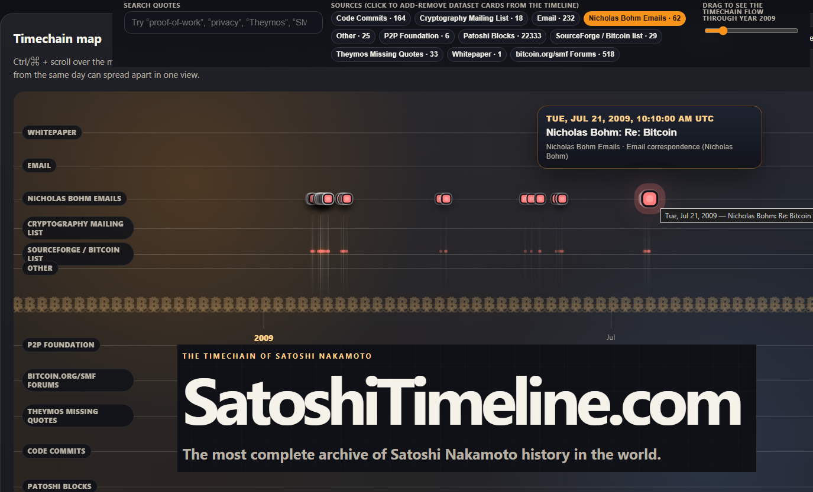
These are not the famous Martti Malmi emails with Satoshi, that were part of this trial. Less famously were Nicholas David Frederick Bohm’s emails with Satoshi, which pre-date Martti’s. It seems the Bitcoin community forgot about over sixty of these original Satoshi emails with Bohm, as they remain unnaccounted for in the popular archives of Satoshi's writings. Before the 2024 trial, they were private. And for the first time, they will be showcased and analyzed in detail here. All of them are available in order, including their sources, on SatoshiTimeline.com
Bohm was not a cypherpunk celebrity. He was not like Hal Finney, Adam Back or Nick Szabo. He was a British solicitor, a former partner at Norton Rose, a man with a serious interest in law, technology, cryptography, and civil liberties. From 2000-2024 he maintained voluntary roles as an advisor to the Foundation for Information Policy Research, the Open Rights Group, and Cyber-Rights & Cyber-Liberties.
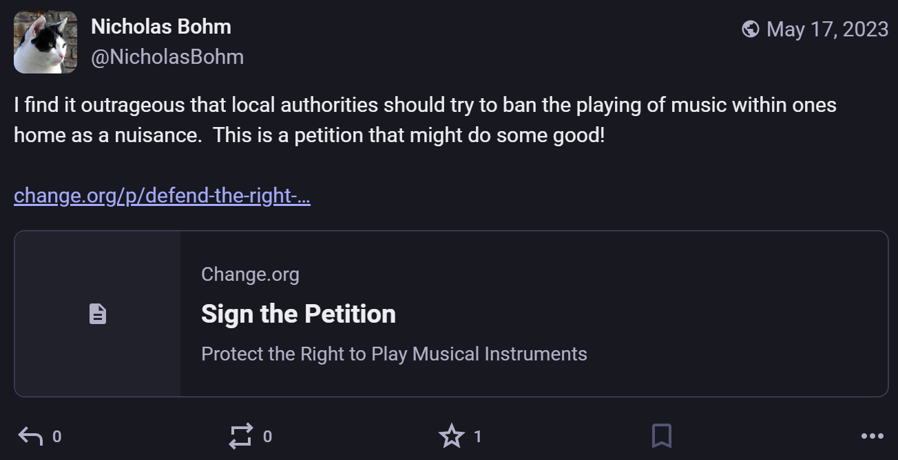
His technology interest led him down the cryptography rabbit hole fairly early on in the 70’s. And though Bohm may have not written code, he was at the very least, an honourable cypherpunk. A code tester. In practise and law.
From COPA V Wright Witness Statement: N Bohm - Exhibits: NB1 - July 2023 - In The High Court of Justice - Business and Property Courts of England & Wales - Claim No: IL-2021-000019
“My interest in cryptography began while I was at Norton Rose, somewhere between 1976 and 1978 when I remember reading Martin Gardner’s column in the Scientific American about a new form of cryptography called “RSA”. I thought that the technology was fascinating, and thought that I was going to be hearing more about this technology in the future. However, it was only some time later, in the early 1990s, that it came to the forefront of my mind again, when I was asked by the Law Society to explain digital signatures to them...One of the things that went on in those early years was factoring competitions as a distributed effort. People would lend computer cycles (i.e. processing power from different computers located in different places) to distributed efforts to factor very large numbers. (This was a way of testing the security of algorithms which were dependent on the difficulty of factoring large numbers.) I had experience of joining collaboratively with a friend’s team although we didn’t win. I mention this as it is relevant to my initial interest in the Bitcoin White Paper as I will explain later...It was part of my general interest in cryptography that led me to join first a cryptography mailing list in the UK, and through that, find out about and sign up to an American cryptography mailing list. I was sufficiently interested in this area to be reading the (American) cryptography mailing list attentively when Satoshi Nakamoto dropped his White Paper on it.”
Bohm downloaded the Bitcoin Whitepaper on January 18th and a week later started his private email correspondence with Satoshi. Craig Wright, who had claimed for years to be Satoshi Nakamoto, had never referred to these emails. This ended up being fatal for Wright’s case, since Bohm’s evidence helped expose the gap between Wright’s claims and Satoshi’s real-world conduct. As a result, the court ultimately declared that Wright was not the author of the Bitcoin White Paper, not the person who used the Satoshi Nakamoto pseudonym between 2008 and 2011, not the creator of Bitcoin, and not the author of the initial Bitcoin software.
Nicholas Bohm did not live to see this judgment. He died in January 2024, shortly before the trial began, a few months after he provided his final witness statement, these emails with Satoshi, and an old copy of the Bitcoin Whitepaper as evidence. Born in July 1943, Bohm was 80 years old when he passed. In the final year of his life, he gave evidence that helped protect Bitcoin’s origin story. That deserves to be remembered, and may be worthy of the Finney Freedom Prize. The Human Rights Foundation should consider this article as a nomination for Nicholas David Frederick Bohm to the 2027 Finney Freedom Prize.
First Contact: “I Have Had a Couple of Problems Running Bitcoin”
Bohm’s first contact with Satoshi begins on January 25th 2009, barely two weeks after Satoshi released BITCOIN version 0.1 to the world. Bohm posted publicly to the SourceForge bitcoin-list with a modest question. He had encountered “a couple of problems running bitcoin” and wanted to know whether the list was an appropriate place to report them, since he had about 70 kilobytes of attachments.
Satoshi replied the same day, asking what problem Bohm was having and invited him to send the debug.log file directly rather than attaching it to the public list. That public exchange moved the conversation into private emails.
What followed was one of the earliest known user-support and debugging conversations in Bitcoin history. Similar to Hal Finney’s debugging Bitcoin emails, as provided by the Wall Street Journal.
Bohm reported that Bitcoin was “mostly running fine,” but that his antivirus software, NOD32 from Eset, had flagged Bitcoin as a virus. He had already reported the detection to Eset as an error, and he immediately saw the larger problem: if other antivirus products did the same, it could become a “barrier to takeup.”
He also reported repeated crashes on Windows XP, providing error messages, event viewer details, hardware specifications, and debug logs.
Satoshi responded by asking for the debug log, confirmed the version, asked what operating system Bohm was using, noted that he had not yet tested Vista, and began reasoning through the fault address.
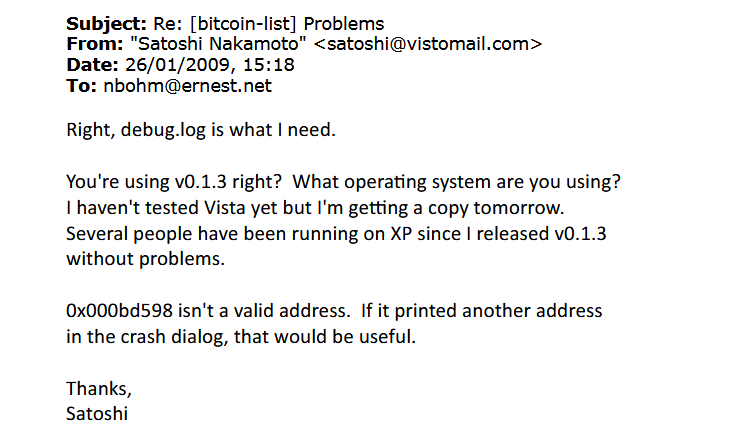
When Bohm kept sending crash reports, Satoshi did not brush him off. He kept investigating.
Bohm was there when Bitcoin was still in the cradle, giving persistent user reports that ended up shaping the next release of the Bitcoin software. Not bad for a 65-year-old.
The “Humble Lawyer” in the Debugging Loop
On the 26th of January, Bohm sent another crash report and replied to Satoshi’s technical questions. He saved the Event Viewer data in a different format in case it might help. Then, with humility, he wrote that he did not know where to find the crash dialog Satoshi mentioned because this was “technically deep water” by his “modest standards” and he was “just a humble lawyer.”
In a later email, after Bohm apologized that his grasp of Bitcoin was superficial, Satoshi replied that this was exactly what he needed. He did not know how someone who did not already understand Bitcoin would interpret the interface. A developer only gets one chance to see a program for the first time, and Satoshi had “already used up all of his” first time impressions of Bitcoin.
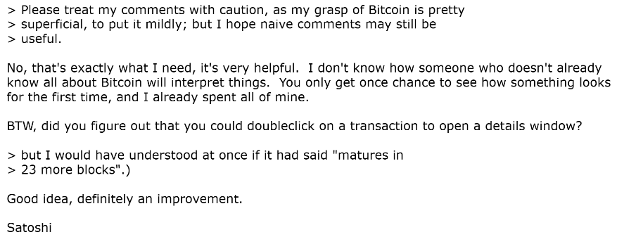
Eraser, Disk Space, DNS, and the Road to Bitcoin v0.1.5
By January 29th and 30th, the crash investigation had shifted toward possible interactions with a program called Eraser, which Bohm used for wiping temporary files. Bohm reported that the crashes seemed to stop after he paused a daily scheduled Eraser task. Satoshi reasoned that Eraser might be filling the disk with random data while wiping free space, causing Bitcoin to run out of disk space.
Satoshi explained where Bitcoin stored its data on Windows XP: the %appdata%\Bitcoin directory. He told Bohm to back up that whole directory because all data files were there. He said disk-full checking was coming in the next release and urged Bohm to switch to a debug build.
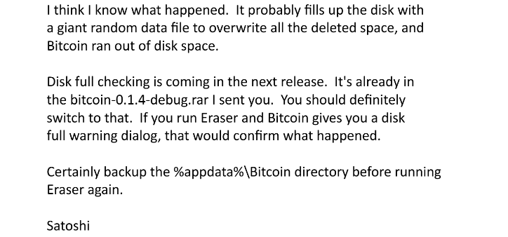
Then the emails themselves became another debugging problem. Satoshi tried sending build files via different email addresses and with different attachment names. Some messages didn’t arrive and some arrived, but without attachments. He tried stripping debug information, reducing file size, renaming files, removing gdb.exe, and even renaming bitcoin.exe to bitcoin.dat in case executable attachments were being blocked. He also uploaded builds to upload.ae as a fallback. Interestingly, Satoshi had used this upload.ae site before to send drafts of the Bitcoin Whitepaper to Adam Back and Wei Dai.
Finally, On January 31st, Satoshi wrote to Bohm, saying: good news, he had pinpointed the bug. The bug could occur if a DNS lookup failed. He sent Bohm a link to a new build and thanked him for his help and patience.
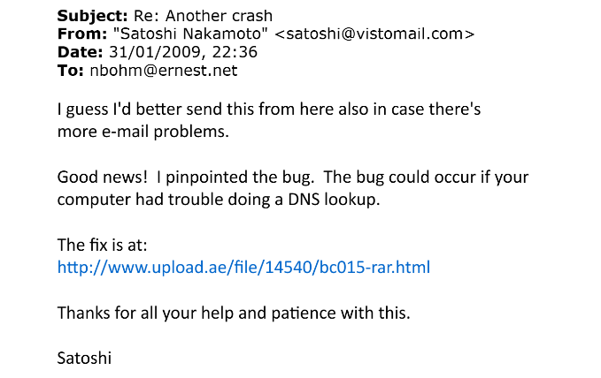
A few days later, on February 4th 2009, Satoshi announced Bitcoin v0.1.5 to the mailing list. The release note said the new version included the fix for the problem Nicholas had encountered, checking for disk full, and changes to improve confusing aspects of the software. Satoshi gave “special thanks to Nicholas and Dustin” for their help and feedback.
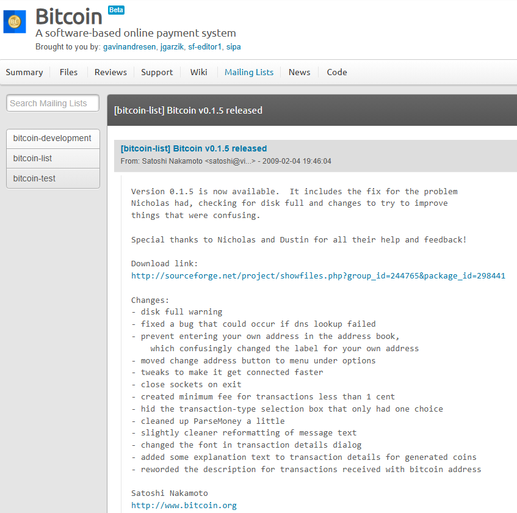
That public message alone places Bohm permanently in Bitcoin history, and it corroborates his private emails with Satoshi. Bitcoin v0.1.5 carried Bohm’s fingerprints. He did not write the code, but he helped make the code better by being one of Bitcoin’s earliest testers.
The 100 Bitcoin Transfer
One of the more historical moments in these emails came on February 1st, 2009.
After the troubleshooting bugs discussion, Satoshi told Bohm that he had sent a transfer to his Bitcoin address, so Bohm could see what it looked like. On-chain, that transfer appears in Block 2616: 100 BTC sent to Nicholas Bohm’s address at 1CHE5JRfc5mr8ZtVUP7nnsS5HC4bWcXoc6.
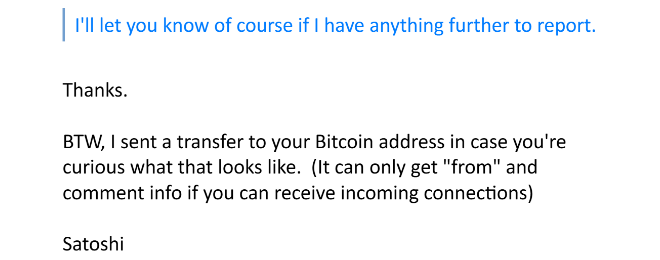
Strangely though, how Satoshi obtained this address from Bohm initially is still a mystery, as it does not appear in the sequence of emails available, before the transfer. Perhaps some of these emails still remain private, or there's a mechanism here unaccounted for, maybe related to the irc room where initial node connections were coordinated. The coins were assembled from two 50 BTC coinbase rewards and moved by Satoshi at 16:25:12 UTC.
Later that evening, at 22:52 UTC, Bohm replied that he could see the payment in his client:
“35 blocks 01/02/2009 16:25 Received with: !Me
1CHE5JRfc5mr8ZtVUP7nnsS5HC4bWcXoc6 +100.00”
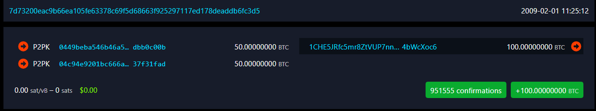
Highlighting the moment, Bohm exclaimed: “It slowly begins to feel a little more real.”
On February 3rd, a second exchange occurred between the intrepid pair.
Bohm wanted to try sending bitcoin back to Satoshi, to know what happened when the amount was not 50 BTC, or a clean multiple of 50 BTC. At that point his experience with Bitcoin was still dominated by block rewards and generated coins with no variations in smaller decimal amounts.
At 22:29 UTC, Satoshi gave him an address (presumably his own): 1GtkM4wviwohP192tec9g83hd9X5qtbk9j
Then Satoshi added that he would send back 19 bitcoin +0.01 bitcoin as a confirmation.
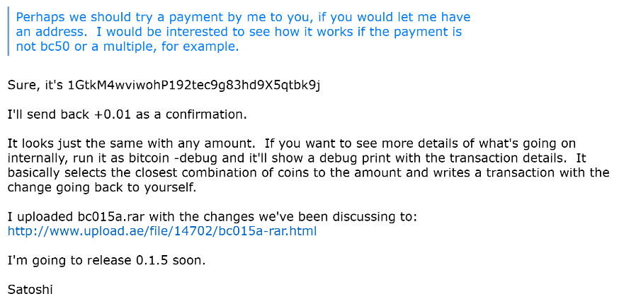
At 22:44 UTC, Bohm replied: “Fine, I’ll give it a try.”
Minutes later, he did. At 22:55:58 UTC, Bohm sent 19 BTC to Satoshi’s address in Block 2914. The transaction also sent a 30 BTC change output back to Bohm’s own address, showing exactly the kind of internal wallet behaviour Satoshi had been explaining: Bitcoin selects coins, spends them, and sends the change back to yourself.
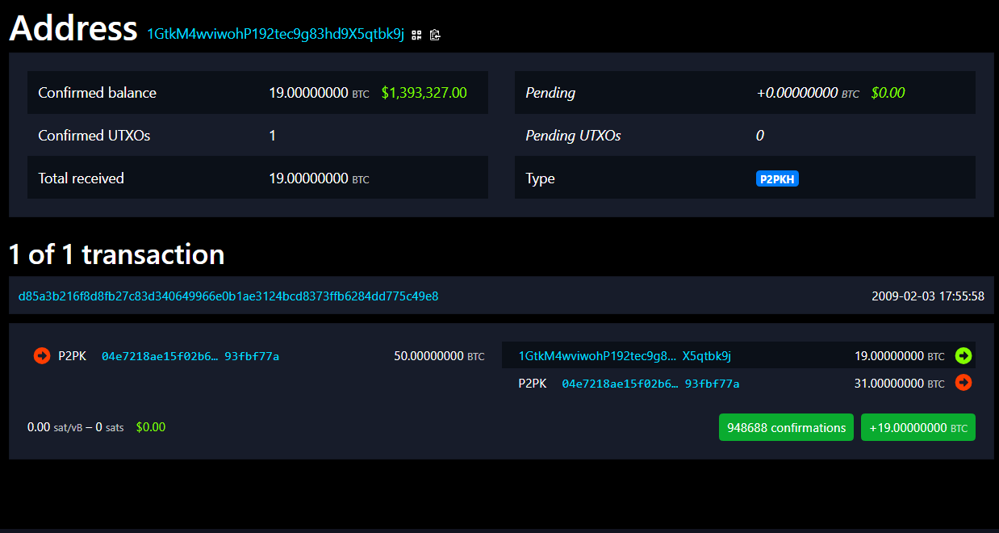
Then came the remarkable part.
At 23:04:52 UTC, in the very next block, Block 2915, Satoshi sent 19.01 BTC back to Bohm’s address at 1CHE5JRfc5mr8ZtVUP7nnsS5HC4bWcXoc6.
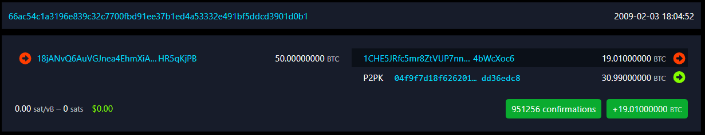
Interestingly, Bohm’s email reply - timestamped 23:04 UTC - was sent at the very same minute of the block in which Satoshi’s sending transaction to Bohm was confirmed. Both of these lads were keeners - watching, sending and receiving transactions, and emails all at once. Live!
Bohm: “The bc19.01 came back pretty swiftly! It hadn’t in fact occurred to me that you could use hundredths, though it’s true that that is fairly conventional for currencies.”
That tight sequence is beautiful: Bohm sends 19 BTC, Satoshi sends 19.01 BTC back in the next block, and Bohm immediately realizes that Bitcoin can handle hundredths like an ordinary currency and excitedly emails back Satoshi with this insight. All within 9 minutes.
There may be a few explanations for this tight sequence of events. Satoshi may have been using scripts to auto-send back the same amount of coins with +0.01 – which would be a great live test of Bitcoin scripts. Or Satoshi may have simply been at his keyboard at the time of receiving Bohm’s 19 coins and immediately responded with his own reply transaction. It’s also possible Bohm and Satoshi saw their corresponding receiving transactions in their mempools, before they were confirmed in their respective blocks. Thus giving them both time for their tight actions of reply email and reply transaction. Timestamps in Blocks are also not always accurate, as they are based on the mining computer systems clock, which can be modified to be behind or ahead of the real time.
In any case, Bohm’s initial 19 BTC donation to Satoshi remains unspent. Satoshi did not return the same coins from Bohm’s 19 BTC donation. Instead, Satoshi appears to have returned 19.01 BTC using a different source of coins, while leaving Bohm’s original 19 BTC donation sitting at the address Satoshi had provided to this day.
These multiple transfers later mattered in court because Craig Wright had made claims about Satoshi’s early Bitcoin transfers that made no mention of Bohm whatsoever. But, the real Satoshi should have remembered these interactions with Bohm. Wright appeared only to become aware of Bohm’s dealings with Satoshi when COPA served Bohm’s witness statement and supporting email evidence. When challenged on this, Wright claimed amnesia and could not name even one non-public recipient among the supposed many people to whom he claimed to have sent bitcoin as Satoshi.
Bohm’s multiple transactions with Satoshi are not only a charming relic of Bitcoin’s infancy. They are one of many factual landmines the blew up Craig's false identity claim.
₿ohm, the legend, helped prove Craig was not Satoshi.
A “Satoshi Nakamoto” Ghost in The Bitcoin Machine
Going back to early 2009, The 100 BTC transfer also revealed a user-interface problem.
Bohm first saw the incoming transaction displayed as received with “!Me.” The next morning, the interface showed it as received with “Satoshi Nakamoto.” Satoshi found this puzzling, as he had another user claim the exact same issue. A strange “Satoshi Nakamoto” ghost in the Bitcoin machine.
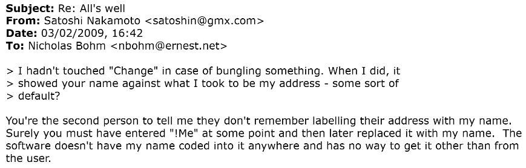
Satoshi began thinking through the interface. Users seemed to be confusing their own receiving address with the sender’s identity. Satoshi considered labels such as “Receiving address,” “Incoming address,” “To,” and “Recipient.” He floated alternatives like “From: unknown, To: Your Address.”
Bohm responded with some helpful thoughts. He preferred “unknown” over “anonymous,” because “unknown” meant the system did not know the source, while “anonymous” suggested the sender had chosen to conceal their name.
Bohm also suggested that the transaction display should say “matures in 23 more blocks,” because “matures in 23 blocks” had initially confused him when the transaction already showed 97 blocks. Satoshi immediately recognized it as a good improvement.
Bohm helped Satoshi think through how ordinary users might misread Bitcoin syntax, and ultimately contributed to UX clarity for Bitcoin users.
Bohm continued to run Bitcoin for months. In February, he asked why his machine seemed to use only half his CPU. Satoshi asked whether he had a dual-core system and noted that Bitcoin currently launched only one process to generate coins, but could easily launch one per processor. He said it was probably time to implement that.
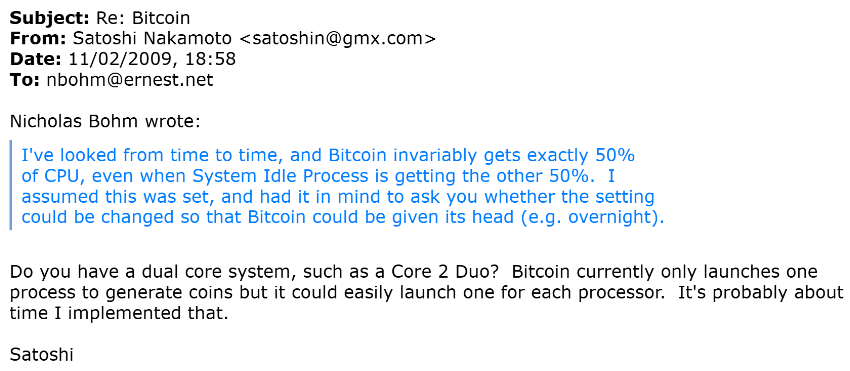
In February, Bohm also asked what the “blocks” number at the bottom of the UI meant. Satoshi explained that it was the total number of blocks in the network’s block chain, a number every node displayed, increasing roughly every ten minutes whenever someone generated a block. Bohm suggested some other language that might help users understand it better.
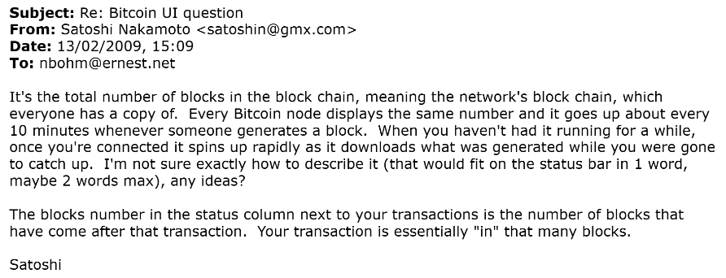
In April, Bohm reported runs of generated blocks marked “not accepted.” Satoshi explained that some not-accepted blocks were normal and harmless, but that a long run could suggest lost network communication. He also said he was considering hiding unaccepted blocks by default because showing users something that appeared to be given and then taken away was frustrating.
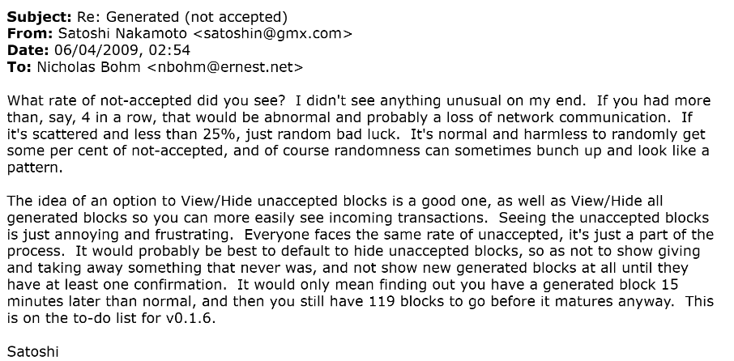
In May, Bohm noticed a generated block worth 50.10 bitcoin rather than the usual 50. Satoshi explained transaction fees: if a generated block included a transaction with a fee, the generator earned that fee in addition to the 50 BTC subsidy.
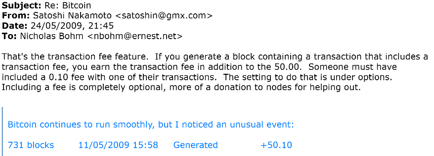
In July, after Bohm had some connectivity problems, Satoshi encouraged Bohm to leave port 8333 open for incoming connections, so other Bitcoin nodes could bootstrap and sync more reliably.
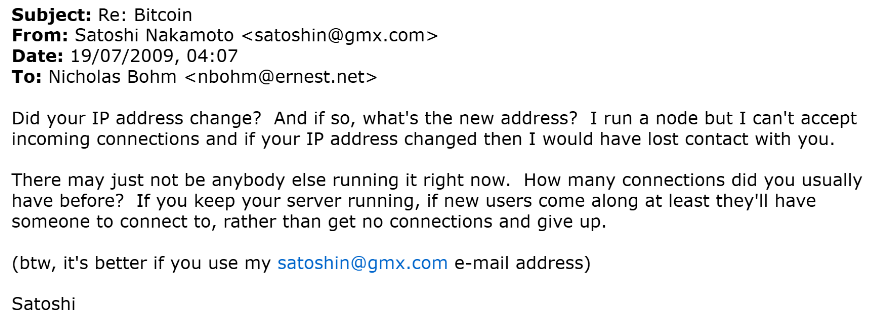
Apparently at this time, Satoshi couldn’t enable incoming connections for his own node, which may explain the several gaps in patoshi blocks not being generated in this timeframe as well.
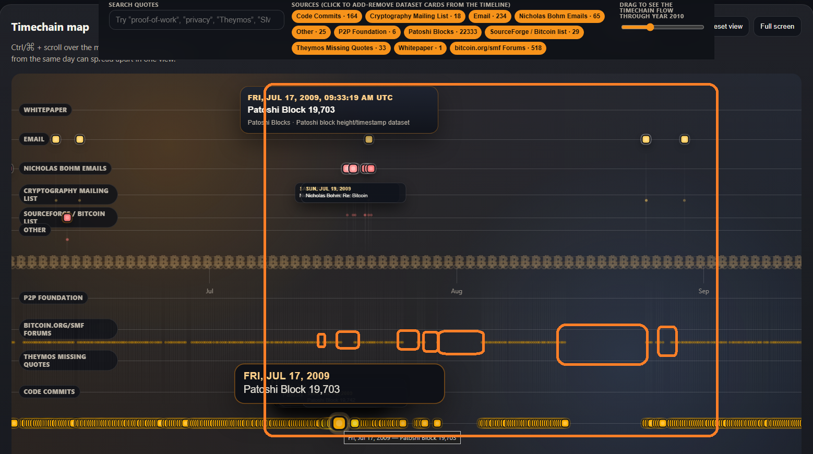
Perhaps Satoshi was on some kind sabbatical, for the northern hemispheres summer months, and was operating only one node on-the-go without admin access to a internet router to open port 8333. It’s interesting that Satoshi privately admits to the ghost-town nature of the Bitcoin network to Bohm at this time. Bitcoin still didn’t have a price six months after launch, and was still a very nascent niche among turbo-nerds, with sporadic periods of slow blocks being found due to limited nodes generating bitcoins.
Satoshi’s next line reinforces the point: if Bohm keeps his server running, new users will at least have someone to connect to, rather than opening the software, finding no peers, and abandoning it. In other words, Bohm was not merely a user being helped through a bug here. He was being asked to help hold the network door open for new users by Satoshi. And Bohm answered the call by getting a new router and generating more bitcoins.
“I’ll leave it running...” ~ Bohm
Another detail seen here, Satoshi also started to prefer his @gmx email over his @vistomail email. Which is also reflected in latter edits of the Bitcoin Whitepaper where the same kind of email preference switch happened in favor of his GMX email. More on that in a future article.
On July 20th, Satoshi followed up with a related email. After attempting to connect to Bohm’s IP address and failing, Satoshi concluded that something was probably preventing Bohm from receiving incoming connections.
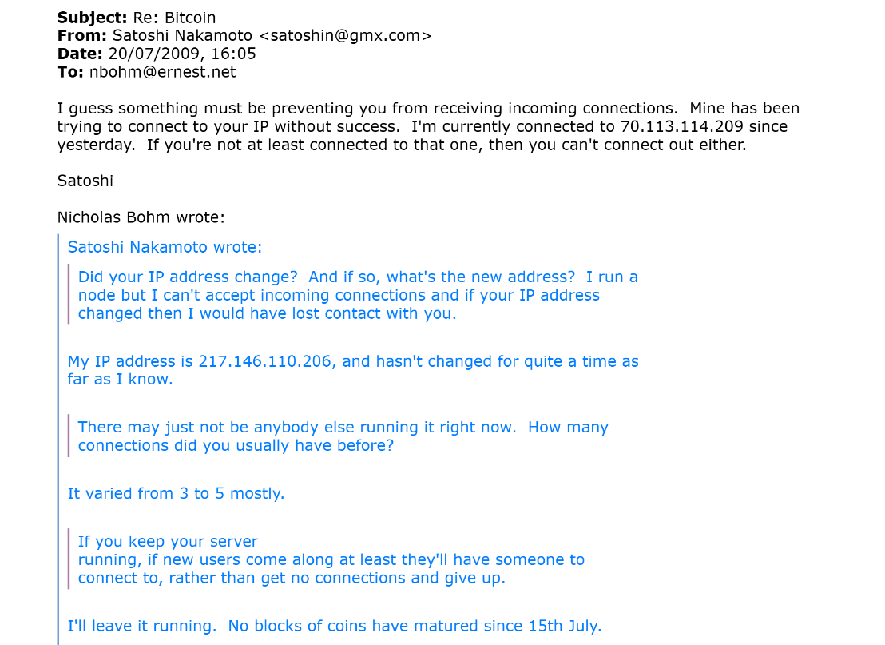
This email also contains a rare and important network clue: Satoshi says he was “currently connected to 70.113.114.209 since yesterday.” This IP didn’t belong to Satoshi, but rather one of the peers his node was connected to on July 19–20, 2009.
This IP addresss 70.113.114.209 em>may have belonged to Dustin Trammell, an early Bitcoin participant who had corresponded with Satoshi in January 2009 and who has publicly documented receiving coins from Satoshi around this time. The modern geolocation of this IP address points to the Round Rock, Texas area; the same IP was used in 2007 to edit a Texas A&M Aggies football page; and Trammell was apparently living and working in the Austin-area during this period. But, this is only strong circumstantial evidence. Residential IPs can be dynamic, reassigned, shared, proxied, or misleading when viewed years later.
Generally, this shows Satoshi was actively tending the peer-to-peer layer: checking whether an early user’s node was reachable, comparing observed peers, and encouraging uptime - because each additional reachable node materially improved the experience of future users. The network was not yet a powerful distribution of anonymous hashpower. It was a small social and technical mesh. Still vulnerable, still crawling and learning to walk.
Bohm’s Last Email to Satoshi - “Bitcoin for Dummies”
Latter that same month, Bohm sent his last apparent email to Satoshi, he jokingly replied that he hoped his misunderstandings would contribute to an eventual book on “Bitcoin for Dummies.” We don’t have any Satoshi reply to this Bohm email, perhaps this was the end of their correspondence.
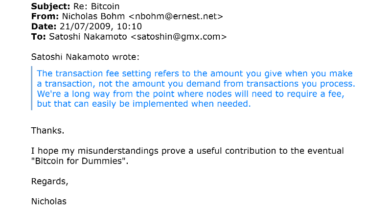
Bohm’s misunderstandings were helpful data. His feedback and testing ultimately shaped Bitcoin software. And Bohm’s mining contributions in the early days may have kept the Bitcoin network stable in it’s infancy, as he was one of a small group of node runners at the time. Bohm helped Satoshi to Bitcoin at a critical time. He should be remembered for that and more.
In Bohm’s 2023 witness statement, he wrote these final thoughts on Satoshi Nakamoto:
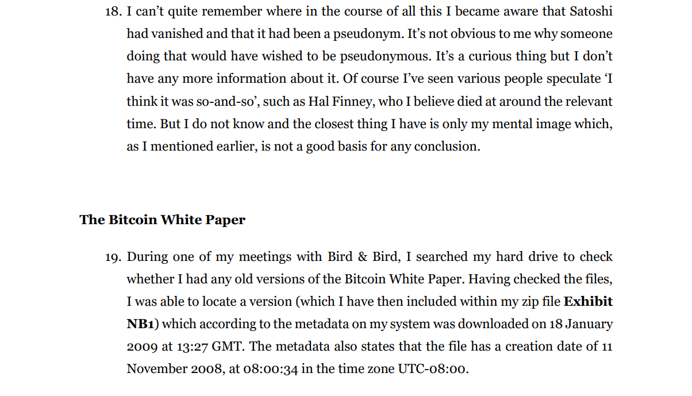
Why the Bohm Evidence Hurt Craig Wright’s Claim
In the COPA v Wright trial, COPA’s position was that Wright’s claim was false, supported by forged documents and shifting stories. The court agreed, finding that Wright had lied extensively and repeatedly.
Bohm’s emails were factual evidence of Satoshi’s behaviour. More then sixty ordinary, dated, detailed exchanges with Satoshi about actual early Bitcoin behaviour, cross referenced and supported by many other accounts of the same kind. Wright mentioned none of these interactions with Bohm before they were evidence in court, nor the multiple Bitcoin transactions involved.
If Wright had truly been Satoshi, these were the kinds of interactions he should have remembered. Not vaguely and not after being shown them. He should have known them because he would have lived them if he was really Satoshi.
Furthermore, the court records show that Bohm provided a January 2009 copy of the Bitcoin Whitepaper, which was authenticated and used as a control copy. This was crucial since the Bitcoin Whitepaper went through a few revisions by Satoshi over time. Bohm’s copy was likely the second version of three fully known copies. The original public version released on October 31st 2008 being the first. If we believe the meta data of Bohm’s whitepaper version two, it was created on November 11th 2008, a week and a half after the first versions release. Satoshi may have made some revisions after receiving critical feedback on the cryptography mailing list.
Bohm’s evidence did two things: it showcased the real Satoshi’s conduct, and it supplied a contemporaneous Whitepaper artifact against which Craig’s claims were tested and found wanting.
Bohm’s evidence verified Craig’s forgeries.
₿ohm, The Unsung Bitcoin Hero
Bitcoin history has many famous names. Hal Finney is rightly honored. Adam Back and Wei Dai are rightly remembered for their pre-Bitcoin work and early correspondence. Martti Malmi is rightly recognized for helping with the website, forums, early code and infastructure.
Nicholas Bohm belongs in that constellation of honorable cypherpunks, he was one of the first people to help Bitcoin and Satoshi survive contact with reality.
He ran the software. He extended the chain of Bitcoin blocks by generating coins. He reported bugs. He tested Bitcoin. He helped identify a DNS-related crash. He helped expose disk-full problems. He explained where the interface confused a newcomer. He received 100 bitcoin from Satoshi and sent 16 back! He noticed transaction fees. He kept his node running when there may have been few others online. He preserved his emails with Satoshi AND kept them private, up until the point where it really mattered for them to be public. In court!
Talk about attorney client confidentiality. One could make the case Bohm was Satoshi Nakamoto’s first pro-bono lawyer. Though I’m sure Bohm got some coins out of the deal.
In 2009, Bohm helped Satoshi debug Bitcoin. In 2024, his evidence helped protect Satoshi’s legacy.
What a beautiful destiny and fate fulfilled for Bohm!
The only tragedy is that Bohm died before the trial began. He did not live to see the court’s decision - that Craig Wright is not Satoshi Nakamoto. And as a lawyer, he was very likely interested in the outcome of this case.
Bitcoiners owe debts that are not measured on-chain. Giants have gone before us paving the way for our current prosperity and freedom. Satoshi is one of them. Bohm is another. And there are many more.
Our debt of gratitude to Nicholas David Frederick Bohm and Satoshi Nakamoto is unpayable. As it is to those who have and continue to fight with code for the Cypherpunk Ideal. Our debt to them can only be paid in tribute, lionization, testing and more code for that very same LiberƎtas.
If Bitcoin is to remember its heroes, it should remember Nicholas Bohm.
If the 2027 Finney Prize is for service to Bitcoin’s cypherpunk ideals, Bohm is worthy of it.
When it really mattered, Bohm preserved the truth and spoke it.
Craig Wright is not Satoshi Nakamoto.